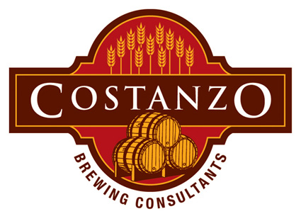

The Victorian Amateur Brewing Championships (Vicbrew 2009) will be held on 3rd & 4th October 2009 at the Belgian Beer Café Eureka, 5 Riverside Quay, Southbank Melbourne. Melways reference: 2F E7 .
Placing (1st, 2nd or 3rd) in any category at Vicbrew 2009 qualifies entrant to submit an entry, in the same category, at AABC 2009.
Entries may be submitted upto Saturday 19th September 2009 at the following collection points:
Vicbrew 2009 Entry Collection
Points |
Our Sponsors |
|
|
|
 |
|
Vicbrew
2009 Entry Form
AABC 2009 Styleguides
in pdf format, one page per style, to be used at Vicbrew 2009.
AABC 2009 Styleguides
in pdf format, condensed version.
Beer Judging Form to be
used at Vicbrew 2009
Vicbrew
2009 Full Results in pdf format
Vicbrew 2009 Results Summary
also in pdf format,
We hope to see you at Vicbrew 2009.